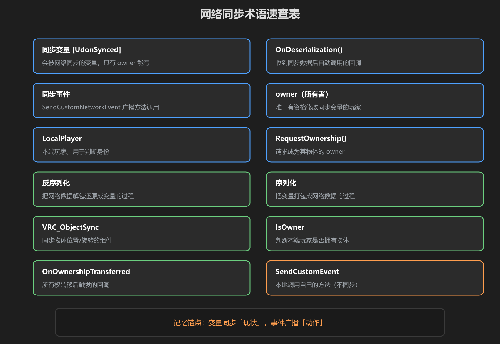
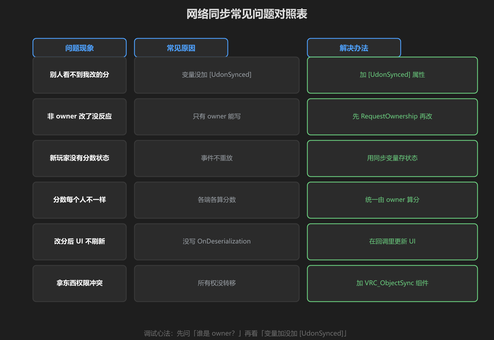
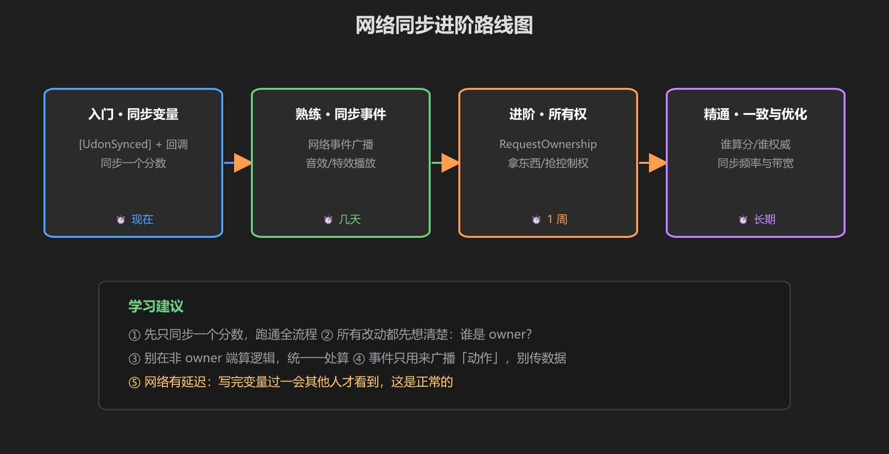

第 6 篇：速查表 — 术语、常见问题、进阶路线
把整套教程浓缩成三张图 + 两张表，遇到问题直接来这里查。
1. 术语速查（12 个）

图：同步变量 / 同步事件 / owner / 回调…… 全部术语一图收
| 术语 | 一句话解释 |
|---|---|
| [UdonSynced] | 标记变量会被网络同步，只有 owner 能写 |
| OnDeserialization() | 收到同步数据后自动调用的回调，刷新 UI 的地方 |
| SendCustomNetworkEvent | 全网广播调用一个方法，适合音效/特效 |
| owner | 物体的所有者，唯一有写权限的玩家 |
| Networking.LocalPlayer | 本端玩家，配合 IsOwner() 判断身份 |
| RequestOwnership | 请求成为某物体的 owner |
| OnOwnershipTransferred() | 所有权转移成功后触发的回调 |
| VRC_ObjectSync | 同步物体位置/旋转，拿起物体自动转移所有权 |
| 序列化 | 把变量打包成网络数据的过程 |
| 反序列化 | 把网络数据解包还原成变量的过程（OnDeserialization） |
| NetworkEventTarget.All | 广播给所有人（含自己）；Others = 除自己外 |
| 一致性 | 数据只有一处权威来源，别各端各算 |
2. 常见问题对照表

图：问题现象 → 常见原因 → 解决办法，直接照着排查
| 问题现象 | 常见原因 | 解决办法 |
|---|---|---|
| 别人看不到我改的分 | 变量没加 [UdonSynced] | 给变量加 [UdonSynced] 属性 |
| 非 owner 改了没反应 | 只有 owner 能写同步变量 | 先 RequestOwnership，再写数据 |
| 新玩家没有分数状态 | 事件不重放 | 用同步变量存状态，事件只播动作 |
| 分数每个人不一样 | 各端各算分数 | 统一由 owner 一处算分，其他端只读 |
| 改分后 UI 不刷新 | 没写 OnDeserialization | 在回调里刷新 UI |
| 拿东西权限冲突 | 所有权没转移 | 给物体加 VRC_ObjectSync 组件 |
3. 进阶路线图

图：同步变量 → 同步事件 → 所有权 → 一致性与优化
调试心法：同步出了问题，先问两件事 —— 「谁是 owner？」「变量加没加 [UdonSynced]？」八成问题都出在这两处。
记住网络有延迟：写完变量到别人看到，中间有几十毫秒的网络延迟，这是正常的，不是 bug。
学前检查清单
- 能说出 12 个术语里至少 8 个的含义
- 对照常见问题表能独立排查同步 bug
- 知道自己下一步该学什么（进阶路线）